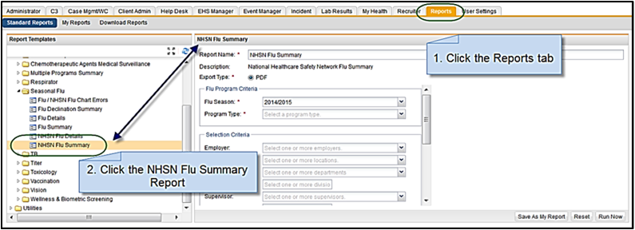
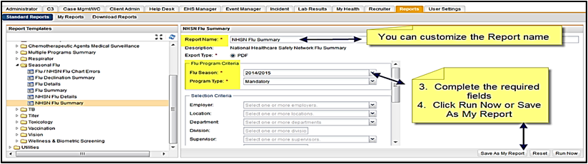
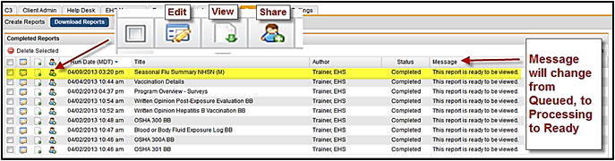
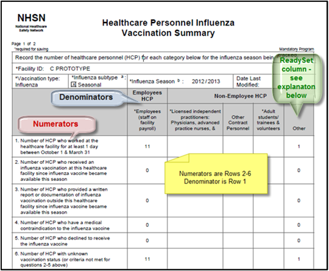

There are preset report filters for NHSN Reporting.



The report created is the NHSN - Healthcare Personnel Influenza Vaccination Summary in PDF format.
The report will display the Facility ID, Vaccination type, Influenza subtype, Influenza Season, Date Last Modified. As required by NHSN it will also display the Numerator and Denominator criteria. See a portion of the report below. The Denominators should match up to the Numerators.

We have added a fifth column of Other that shows if any worker does not fall into one of the four NHSN categories. You can run the NHSN Influenza Detail report to see the complete details including those in the Other column.
The Other column means that there is a population type that isn't mapped to go into a particular NHSN category. An example would be a population type of "Board of Directors", ReadySetdoes not know if that type is under employee, contractor, etc. If you have numbers displaying in the Other column, you should contact Axion Customer Care and they can run a special report to see where population types are mapped.